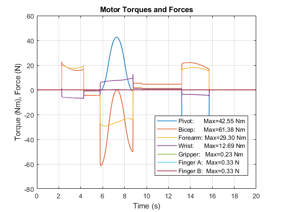
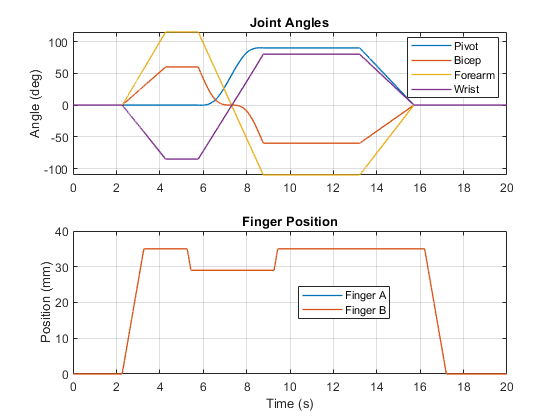
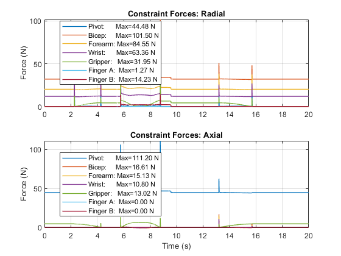
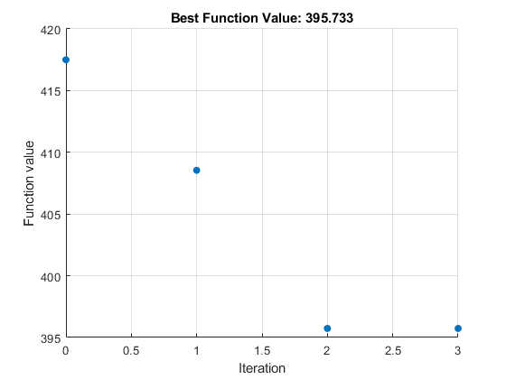
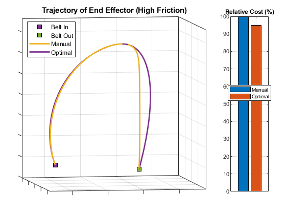
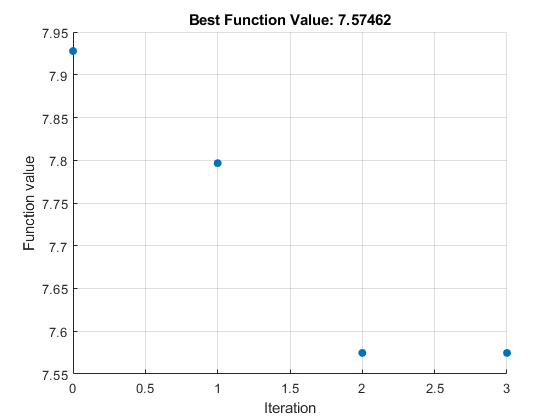
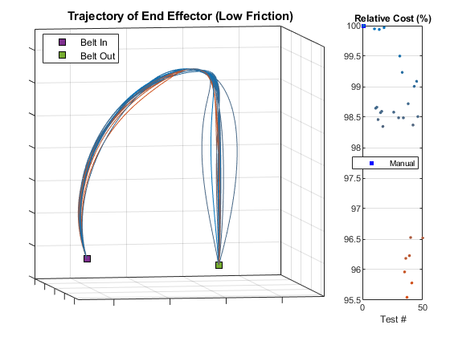

youBot Arm
This examples models a robotic arm and two conveyor belts. One conveyor belts bring blocks to the robot. The robot grabs the block, flips it over and transfers it to another conveyor belt which transports it away from the robot.
This example can be used to determine requirements for electrical and mechanical design, detect integration issues, design and test control logic, and optimize path planning.
Contents
Model
The top level of the model contains hyperlinks that configure the model according to the test you wish to perform. The default test is for the entire system (robot arm and conveyor belts).
Box transfer tests can be run to determine the amount of power required for a specific manipulator trajectory.
Joint tests can be run to determine required motor torque and the forces that the bearings will experience.
Simulation Results from Simscape Logging
The plot below shows the current drawn by all motors in the youBot robotic arm.
The plot below shows the 3D trajectory of the box moved by the youBot robotic arm.
The plot below shows the torque or force for each motor in the youBot robotic arm.
The plot below shows the positions of the joints in the youBot robotic arm.
The plot below shows the constraint forces for each joint in the youBot robotic arm.
Optimization Results With Friction
Iter Func-count f(x) MeshSize Method
0 1 417.494 0.05
1 25 408.543 0.1 Successful Poll
2 49 395.732 0.2 Successful Poll
3 50 395.732 0.1 Refine Mesh
Maximum number of function evaluations exceeded: increase options.MaxFunctionEvaluations.
Elapsed time is 70.004473 seconds.
  Optimization Results Without Friction
Iter Func-count f(x) MeshSize Method
0 1 7.92742 0.05
1 25 7.79247 0.1 Successful Poll
2 49 7.57392 0.2 Successful Poll
3 50 7.57392 0.1 Refine Mesh
Maximum number of function evaluations exceeded: increase options.MaxFunctionEvaluations.
Elapsed time is 70.657023 seconds.
 